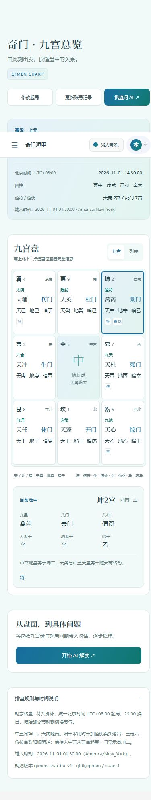
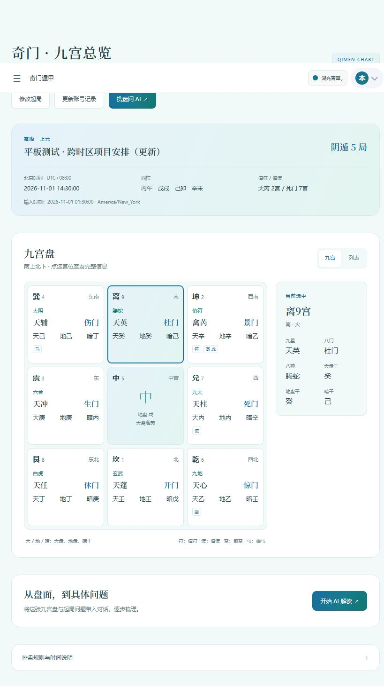

沿用侧边栏和蓝绿渐变，新增正式起局、九宫总览、账号历史与携盘 AI 对话。
类型检查、H5 生产构建通过。生产包在手机视口真实起局，基准日期的局数、四柱、值符和值使均匹配，控制台无错误。
正式Vue/uni-app H5代码；真实奇门计算；账号、历史和AI响应为本地模拟API。浏览器视口验证不等于真机验收；未连接生产数据库或真实大模型。


结构化验证记录 · 两端实际模拟AI请求 · 前端测试日志 · 后端测试日志 · 构建日志 · 生产包手机验证截图